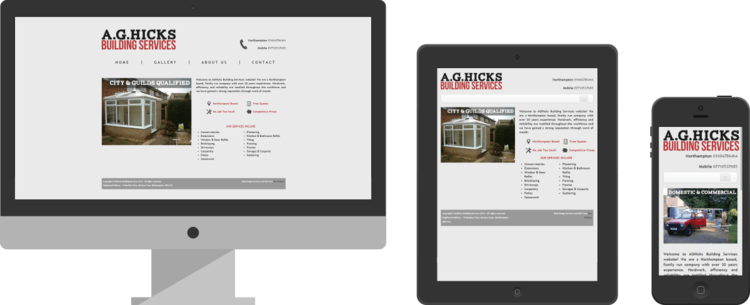

AGHicks Building Services
November, 2012
Midway through 2012 I decided to finally act on my passion for webdesign and learn HTML and CSS.I needed a project after I had learnt the basics, and my step-dads building business seemed like the perfect fit.
The main priority of the site was accessibility and legibility. The business works with a high percentage of elderly people, so the website needed to be simple, to the point and easily readable. Large text, high contrast and clear spacing helped to acheive the overall easy to digest experience.
Also noted was the obvious need to show images of numerous jobs. Potential clients want to come to this website and see four things: where the business works, what they do, how to contact the business and what the quality of jobs looks like.
AGHicks Building Services had never had any professional design work applied to it, so I also designed a logo to accompany the website.